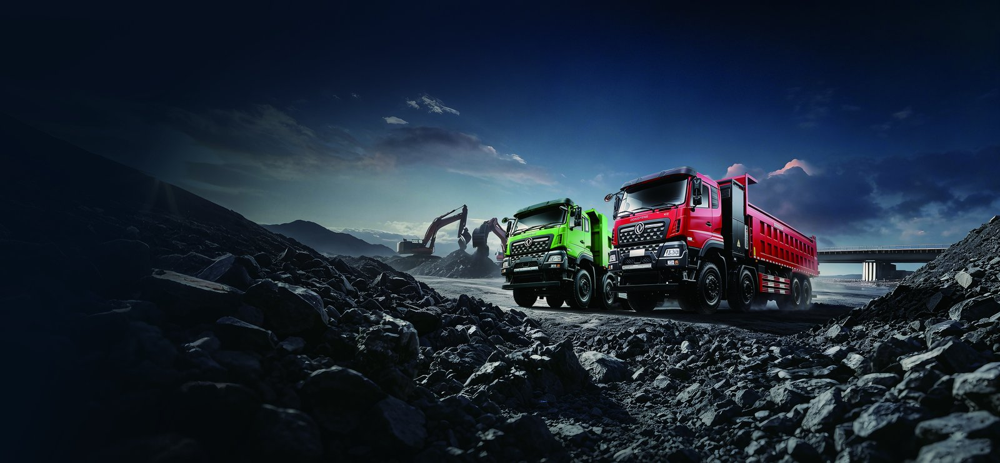

The TE8P electric truck is a 6x4 tractor earning its place on Chile's copper corridor, where concentrates, supplies, and equipment move between the Atacama mines and the ports of Antofagasta and Mejillones on fixed, repeatable loops. The corridor's geography is an electric truck's dream: heavy loads descend to the coast, empty or light loads climb back, and solar irradiation is among the best on earth. This review covers the TE8P's regen performance, solar charging synergy, and corridor economics.
The loaded leg of a copper supply loop runs downhill from the interior to the coast, which means the TE8P's regenerative braking recovers energy precisely when the truck is heaviest. Chile's mining majors have binding decarbonization targets that flow into contractor tenders, and diesel delivered to high desert sites carries a severe logistics premium. For full specs, see the TE8P electric tractor page.
Chile's green freight programs and cheap solar power complete the case. Our Chile electric truck market guide covers the incentives and the corridor charging projects already under way.
The table lists production data for the corridor variant from Shaanxi Fenghan Trading Co., Ltd.
| Parameter | TE8P Value | Note |
|---|---|---|
| Battery capacity | 424 kWh | CATL LFP, liquid cooled |
| Motor power | 510 kW peak | LvKong drive |
| Gross combination weight | 49,000 kg | tractor plus trailer |
| Range per charge | 280 to 330 km | loaded corridor |
| Regen recovery | 10 to 14 percent | on loaded descents |
| DC fast charge | 240 kW | 20 to 80 percent in 75 min |
| Warranty | 8 years / 4,500 cycles | battery pack |
| FOB price | $130,000 to $170,000 | corridor spec |
On the descent from Calama or Chuquicamata to the coast, the TE8P's LvKong motor retards the loaded combination and returns 10 to 14 percent of the round trip's energy to the pack, while friction brakes barely engage. At altitude the electric motor loses nothing, where a turbo-diesel gives up power in the thin air, so the climb back with an empty trailer is quicker and cheaper than the diesel equivalent.
Drivers trained on regen technique report the descents become the safest part of the route, because the motor holds a steady speed without brake fade on the long grades that overheat diesel truck brakes.
The Atacama's solar resource makes the corridor's charging energy among the cheapest in the world. A photovoltaic canopy over the mine-gate charger can supply a majority of daytime charging energy, and Chile's grid is already substantially renewable. Fleets pairing the TE8P with solar-assisted depot charging report effective energy costs below $0.10 per kWh, which pushes the per-kilometer energy figure to roughly an eighth of the diesel equivalent.
A diesel tractor on the corridor burns roughly 40 liters per 100 kilometers loaded, at delivered desert diesel prices, while the TE8P's solar-assisted electricity cost is a small fraction of that per kilometer. The combined energy and maintenance saving exceeds $30,000 per tractor per year at corridor utilization, recovering the FOB premium of $130,000 to $170,000 within three to four years. The emissions data from the telematics system also strengthens the contractor's position in mining tenders that score decarbonization.
Shaanxi Fenghan Trading Co., Ltd. supplies the TE8P with desert cooling packages, Chilean documentation support, and a regional parts buffer. Start with the Chile market guide for incentive detail, then confirm specifications on the TE8P electric tractor page. On the copper corridor, the TE8P electric truck turns geography itself into an operating advantage.
The TE8P electric truck is delivered with a high-voltage isolation monitor, automatic battery pack disconnect on collision, and the multi-layer thermal barrier built into every CATL LFP pack, a chemistry chosen for its stability in hot, dusty, high-utilization duty. Shaanxi Fenghan Trading Co., Ltd. includes a structured operator course with every fleet order, covering regenerative braking technique, state-of-charge planning, charging procedure, and high-voltage shutdown. Fleets that complete the training typically improve real-world range by 6 to 10 percent within the first month, because smooth throttle application and anticipatory regen recover energy that untrained drivers waste as heat. The course also covers daily inspection of tires, coolant, and charging connectors, which catches small faults before they become downtime.
Compliance documentation travels with the truck. Conformity certificates, battery warranty terms of 8 years or 4,500 cycles, and the telematics export of energy and emissions data give fleet managers the evidence base that tenders, insurers, and sustainability auditors increasingly require. For export buyers, that documentation package is as much a part of the product as the steel and the cells.
The battery warranty is the foundation of the ownership case: 8 years or 4,500 cycles on the CATL LFP pack, transferable to a second owner, which means the truck can be sold or refinanced mid-life with a factory guarantee still running. No diesel powertrain offers anything comparable, and that difference shows up in residual value, where documented, warranted electric trucks are clearing stronger percentages of original price than worn diesel equivalents. Fleets that keep disciplined charging habits, staying between 20 and 90 percent state of charge in daily operation, routinely show 85 to 90 percent pack capacity after five years, and the telematics health report converts that directly into resale price.
Maintenance economics reinforce the point. The sealed LvKong motor has roughly one-third the moving parts of a diesel powertrain, with no oil, injectors, turbocharger, clutch, or exhaust aftertreatment to service, and regenerative braking cuts friction brake wear by an estimated 40 percent. The parts that remain are conventional wear items, tires, suspension bushings, filters, and body-specific consumables, all pre-stocked in the Fenghan regional parts buffer for the first year of operation.
From order confirmation to delivery, most Chile buyers take delivery in 45 to 60 days, with Shaanxi Fenghan Trading Co., Ltd. preparing the certification file, the drive configuration, and a first-year spare parts kit in parallel so the truck arrives work-ready. The recommended first step is a route and duty-cycle review: share your daily kilometers, payloads, shift pattern, and depot power capacity, and the team will model range, charging windows, and total cost against your actual operation rather than brochure numbers. That model becomes the backbone of the financing conversation, because banks and lessors lend against documented operating savings far more readily than against projections.
Fleets new to electric trucks should start with two to five units on the most predictable route, instrument everything, and scale after the first quarter of data. Every fleet that has followed that path has expanded its electric share in the second order, because the operating numbers made the argument internally without any further persuasion. Contact the Fenghan export team to begin the route review for your operation.
Ready to electrify your fleet? Contact Shaanxi Fenghan Trading — authorized Dongfeng EV truck exporter. WhatsApp: +86 153 1943 1311 | Email: sales@fenghan-trade.com | dongfengevtrucks.com
🌐 Our Network: Fenghan Trade (SAGMOTO/SHACMAN Truck Export) · 4x2 6x4 tractor truck prime mover